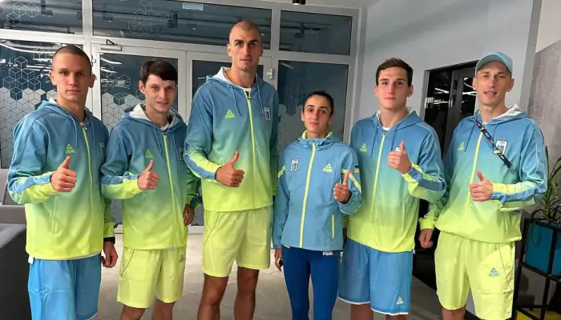
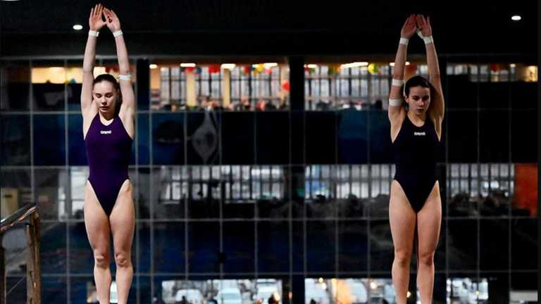
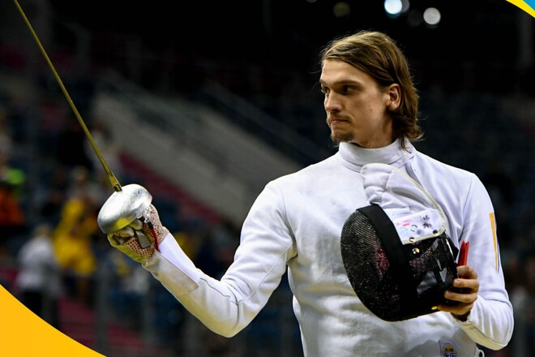

Збірна України з тайського боксу (муай-тай) тріумфально виступила на Європейських іграх-2023 у польському Кракові. Наші спортсмени здобули шість медалей, з яких три – золоті.
Чемпіонами Євроігор стали Ігор Любченко (вагова категорія до 67 кг), Олександр Єфименко (до 71 кг) і Олег Приймачов (до 91 кг).
Срібну медаль поклав до скарбнички "синьо-жовтих" Єгор Скуріхін (до 81 кг). Раніше бронзові нагороди в муай-тай завоювали Владислав Микитась (до 60 кг) та Анастасія Михайленко (до 51 кг).
Із трьома золотими медалями збірна України достроково виграла медальний залік Євроігор-2023 з муай-тай.
Ксенія Байло і Софія Есман стали срібними призерками у синхронних стрибках з 10-метрової вишки. Це загалом четверта медаль збірної України зі стрибків у воду на Євроіграх-2023.
Крім того, збірна України виборола другу медаль Європейських Ігор у фехтуванні.
Таким чином, на Європейських іграх-2023 збірна України вже має 32 нагороди: 16 золотих, 9 срібних та 7 бронзових. Наша команда посідає третє місце в медальному заліку після Італії та Іспанії.
Таблиця змагань